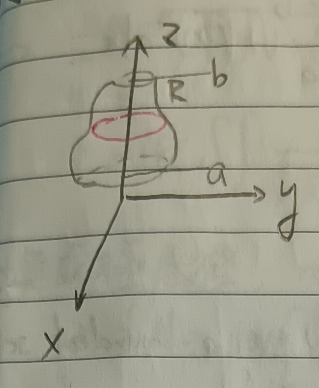
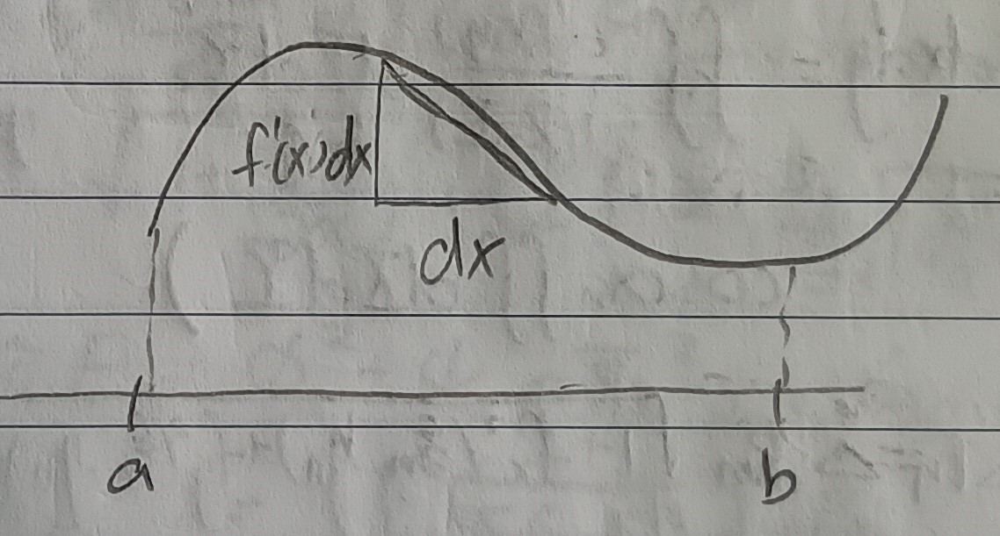
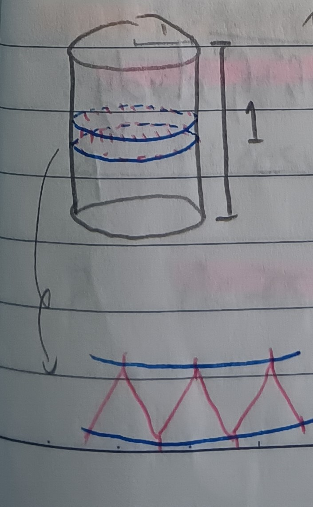
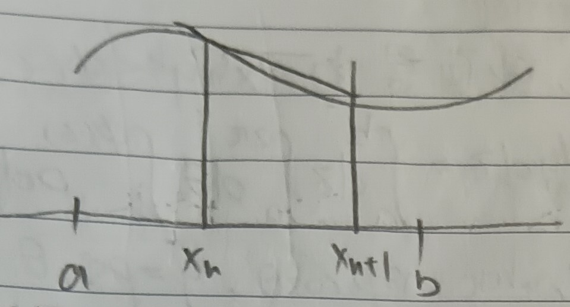
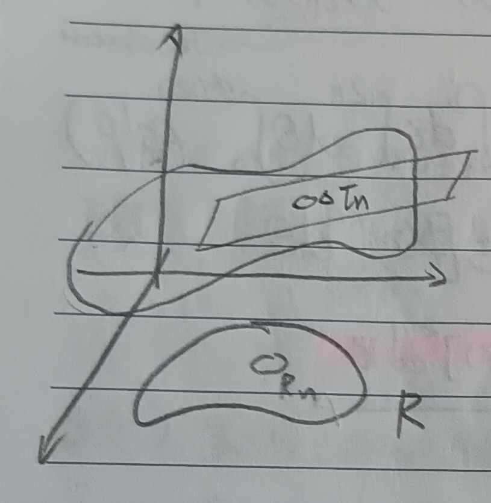
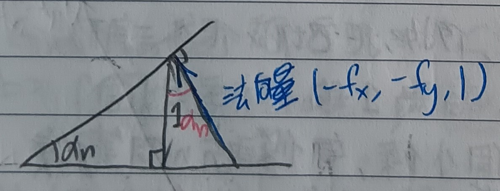
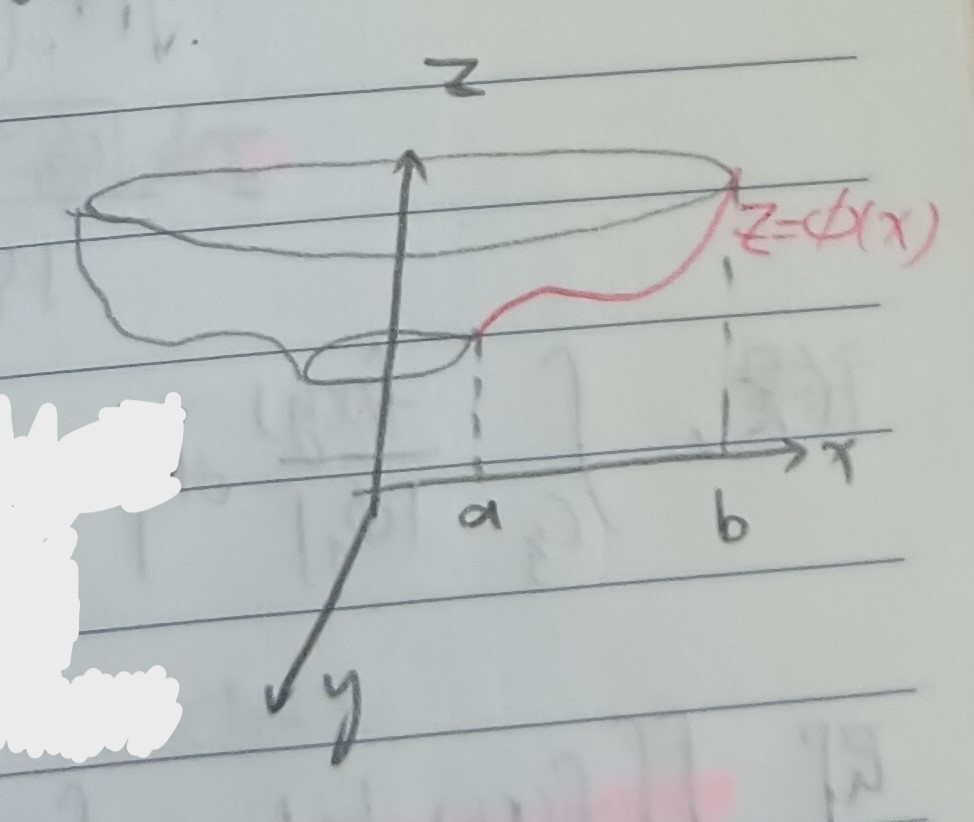

這份筆記是關於各式形體的體積與面積計算的範例。
旋轉體體積
定理 1：旋轉體體積 (Volume of Solid of Revolution)
考慮曲線\(x=\phi(z), a\leq z\leq b\)。我們把這個曲線以\(z\)軸為中心旋轉，則形成圖形的體積為 \[ \int_b^a \pi[\phi(z)]^2dz \] (見下圖1)。
證明：將此旋轉體稱為\(R\)。我們對\(R\)切片，截面是 \[ 0\leq x^2+y^2\leq\phi(z) \] 而所求\(R\)體積即為\(\iiint_R dxdydz\)。我們令\(z=z\), \(\rho=\sqrt{x^2+y^2}\)，其中\(x=\rho\cos\theta\), \(y=\rho\sin\theta\)，則由這裡的定理3與這裡的定理7-1有 \[ \begin{aligned} \iiint_Rdxdydz&=\int_a^bdz\iint dxdy\\ &=\int_a^bdz\iint\underbrace{\frac{\partial(x,y)}{\partial(\rho,\theta)}}_{\mbox{Jacobian}}d\rho d\theta\\ &=\int_a^bdz\int_0^{2\pi}d\theta\int_0^{\phi(z)}\rho d\rho \end{aligned} \] 於是，\(R\)的體積\(V(R)\)即為 \[ \begin{aligned} V(R)&=\int_a^bdz\int_0^{2\pi}d\theta\int_0^{\phi(z)}\rho d\rho\\ &=\int_a^bdz\int_0^{2\pi}\frac{1}{2}[\phi(z)]^2d\theta\\ &=\int_a^b\pi[\phi(z)]^2dz \end{aligned} \] QED
曲面面積
回想 2
今給定一段曲線，我們想知道弧長。我們可以把曲線切成很多小段，用折線去逼近曲線(見下圖2)。
則每段折線的長都是\(\sqrt{1+(f'(x))^2}dx\)，總長即是 \[
\int_a^b\sqrt{1+(f'(x))^2}dx
\] (詳情可以參見這裡的註記2)。
我們希望對曲面可以做一樣的事情，例如把它切成很多三角形。
例 3：圓柱面 (Cylinder Surface)
考慮一個底面半徑為\(1\)，高為\(1\)的圓柱側面。我們把側面分成\(m\)個小條(藍線)，每條再分成\(n\)個等分點(紅線)(見下圖3)。
這樣會分出很多個三角形，每個三角形的面積都是 \[ \sin\frac{\pi}{n}\sqrt{\frac{1}{m^2}+4\sin^4\frac{\pi}{n}} \] 而一共有\(2mn\)個三角形，它們的總面積是 \[ 2mn\sin\frac{\pi}{n}\sqrt{\frac{1}{m^2}+4\sin^4\frac{\pi}{n}} \] 固定\(n\)，當\(m\to\infty\)時，總面積會趨於無限大。可以發現這是一個無效的估計。
回想 4
我們其實有另一種方式去逼近曲線，如果我們在\([x_n,x_{n+1}]\)使用曲線在\(x_n\)上的切線的話，我們一樣會得到曲線長為\(\int_a^b\sqrt{1+(f'(x))^2}dx\)(見下圖4)。
定理 5：曲面面積 (Area of a Surface)
考慮一曲面\(z=f(x,y), (x,y)\in R\subset\mathbb{R}^2\)，則此曲面的面積為 \[ A=\iint_R\sqrt{1+f_x^2+f_y^2}dxdy \]
證明：我們把\(R\)區分成小區域\(R_1,R_2,\cdots,R_n\)。在\(R_n\)中選一點\((\xi_n,\eta_n)\)並作過\((\xi_n,\eta_n,z_n=f(\xi_n,\eta_n))\)的切平面(見下圖5)。
此切平面的方程式為 \[ z-z_n=f_x(\xi_n,\eta_n)(x-\xi_n)+f_y(\xi_n,\eta_n)(y-\eta_n) \] 我們令\(\alpha_n\)是切平面與\(xy\)平面的夾角，並記\(\Delta\tau_n\)為\(R_n\)在\(z\)軸方向投影到切平面的部份的面積，則\(R_n\)有面積 \[ \Delta R_n=\Delta\tau_n\cos\alpha_n \] 又 \[ \cos\alpha_n=\frac{1}{\sqrt{1+f_x^2(\xi_n,\eta_n)+f^2_y(\xi_n,\eta_n)}} \] (詳見下圖6)，故 \[ \Delta_n=\Delta R_n\sqrt{1+f_x^2(\xi_n,\eta_n)+f^2_y(\xi_n,\eta_n)} \]
則曲面面積為 \[ A=\sum\tau_n=\iint_R\sqrt{1+f_x^2(\xi_n,\eta_n)+f^2_y(\xi_n,\eta_n)}dxdy \] QED
註記 5-1
如果曲面是用\(\phi(x,y,z)=0\)的形式表示的(假設\(\phi_z\neq 0\))，則由反函數定理(這裡的定理5)知曲面面積為 \[ A=\iint_R\sqrt{\phi_x^2+\phi_y^2+\phi_z^2}\times\left|\frac{1}{\phi_z}\right|dxdy \]
例 5-2：球面 (Sphere)
考慮球面\(x^2+y^2+z^2=R^2\)，則球的上半可以表為\(z=\sqrt{R^2-x^2-y^2}\)。令球面面積為\(A\)，則由註記5-1知 \[
\frac{1}{2}A=\iint\sqrt{1+\left(\frac{\partial z}{\partial
x}\right)^2+\left(\frac{\partial z}{\partial
y}\right)^2}dxdy=R\iint\frac{dxdy}{\sqrt{R^2-x^2-y^2}}
\] 其中積分範圍是圓碟\(x^2+y^2\leq
R^2\)。
換成極座標，有\(x=r\cos\theta\), \(y=\sin\theta\), \(0\leq r\leq R\), \(0\leq\theta \leq
2\pi\)。這個變換的雅可比行列式是\(D=r\)。則 \[
\frac{1}{2}A=R\int_0^R\int_0^{2\pi}\frac{1}{\sqrt{R^2-r^2}}|r|d\theta
dr=2\pi R^2
\] 故球面面積為\(A=4\pi
R^2\)。
註記 6
一般來說，考慮曲面 \[ \left\{ \begin{aligned} x&=\phi(u,v)\\ y&=\psi(u,v)\\ z&=X(u,v) \end{aligned} \right. \] 其中\((u,v)\in R\subset\mathbb{R}^2\)。假設雅可比行列式\(D=\frac{\partial(x,y)}{\partial(u,v)}\neq 0\)，則由反函數定理知有 \[ u_x=\frac{\psi_v}{D}, u_y=\frac{-\phi_v}{D}, v_x=\frac{-\phi_u}{D}, v_y=\frac{\phi_y}{D} \] 又 \[ \frac{\partial X}{\partial x}=X_uu_x+X_vv_x,\frac{\partial X}{\partial y}=X_uu_y+X_vv_y \] 於是 \[ \sqrt{1+\left(\frac{\partial z}{\partial x}\right)^2+\left(\frac{\partial z}{\partial y}\right)^2}=\frac{1}{|D|}\sqrt{(\phi_u\psi_v-\psi_u\phi_v)^2+(\psi_uX_v-X_u\psi_v)^2+(X_u\phi_v-\phi_uX_v)^2} \] 令\(E=\phi_u^2+\psi_u^2+X_u^2\), \(G=\phi_v^2+\psi_v^2+X_v^2\), \(F=\phi_u\phi_v+\psi_u\psi_v+X_uX_v\)，則曲面面積即可表為 \[ A=\iint_R\sqrt{EG-F^2}dxdy \] (計算略)。
例 6-1：旋轉面表面積 (Area of Revolution Surface)
假設一旋轉面由\(z=\phi(x),a\leq x\leq b\)沿\(z\)軸轉一圈給出(見下圖7)，則令 \[ x=u\cos v,y=u\sin v,z=\phi(u),a\leq u\leq b,0\leq v\leq 2\pi \] 則由註記6，此旋轉面的面積可表為 \[ A=2\pi\int_a^b u\sqrt{1+(\phi'(u))^2}du \]
